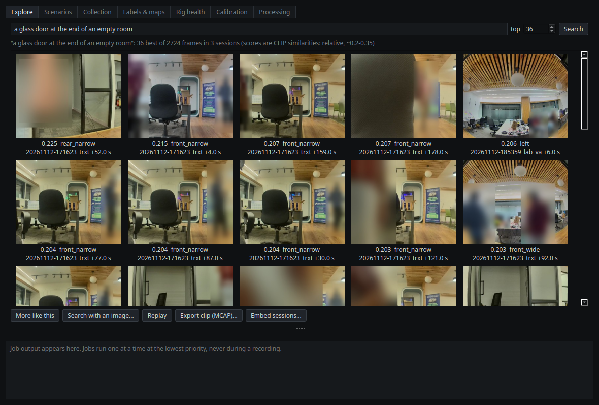

Argus Labs
Six GMSL2 cameras captured on one hardware trigger, an IMU and a GNSS receiver on one clock, recorded as annotation-ready H.265 with a per-frame capture timestamp. After the drive, the same tool turns the recordings into searchable, labelled, mapped AV-lab data.
Argus Labs is the display name; the command is avrig.

What it is
Argus Labs is the data-collection application for one specific rig: a Jetson AGX Orin 64 GB with six e-con STURDeCAM31 cameras (four wide, two narrow) on a GMSL2 deserializer, an Xsens MTi-3 IMU and a u-blox F9P GNSS receiver. It was built for a data-collection team and an AV lab, and is designed so that every fault is attributable to a sensor, a timestamp and a cause: a session that is not trustworthy says so instead of looking fine.
True capture time
Frames are dequeued directly from V4L2 with the driver's SoC TSC timestamp (~15 µs jitter), not GStreamer's arrival time (milliseconds under load).
SyncHardware frame sync
All six sensors are slaved to one trigger. A warm-start procedure enables it safely at boot, and the lock is measured every second.
ReliabilityOne camera never stops the rest
One capture thread and one pipeline per camera; a supervisor restarts a stalled camera alone, with back-off.
Live guardsMount and RF guards
Warns when a camera has moved on its mount, or the GNSS antenna fails, is jammed or spoofed.
QAPreflight, verify, report
A FAIL blocks recording. Every session can be verified frame by frame and summarised in a self-contained HTML report.
LabSearch by meaning
“cyclist crossing at night” across every drive, with CLIP embeddings of one keyframe per second per camera.
Lab3D pre-labels
Tracked 3D boxes of road users from the cameras, merged across views, with a CVAT review loop and nuScenes export.
LabThrough GNSS outages
A smoothed 6-DoF trajectory, with visual speed from the road when GNSS drops out.
LabMap layers
Road roughness, potholes, traffic lights and stop signs, and what changed between drives.
InteropFoxglove, MCAP, nuScenes
Live view and replay in Foxglove, indexed MCAP, nuScenes / KITTI datasets, Nerfstudio export.
The operator window
One window for the drive: six live views, a chip bar that turns every health rule into one glance (SYNC, CAMS, QUALITY, IMU, GNSS, CLOCK, REC, DISK, ISSUES, plus MOUNT, RF and FOX), metadata, markers on hotkeys, and the Sessions and Lab windows for everything after the drive.
After the drive
Heavy work never runs during a recording. Verification, export, neural networks and dataset building run afterwards at the lowest CPU and I/O priority, refuse to start while recording, and stop themselves if one starts.

Where to go next
Getting started
Install, sync at boot, desktop shortcut, the two daily commands.
How it works
The capture pipeline, timing model and why each design decision was made.
Performance
What every feature costs on the Jetson, measured, and simulated accuracy.
Engineering notes
The problems hit on the way, how they were fixed, and what is still unverified.